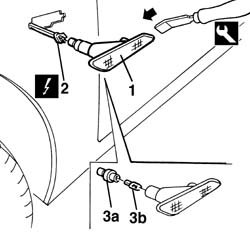

5550C22 l/h or r/h side flasher (one) - r+r
- Path
- Procedures > 55 ELECTRICAL EQUIPMENT > 5550 MANOEUVRING AND WARNING SIGNALS > 5550C turn signal/hazard warning lights > 5550C22 l/h or r/h side flasher (one) - r+r
- Kind
- repair procedure (removal / refitting; the operation number is the code)
- Applies to
- all engines; all production periods
- Interactive page
- https://sloeber94.github.io/elrnDB-a156/en/#/3238484
Applies to: all engines; all production periods
 Removing
Removing
 Refitting
Refitting1. Take the side flasher off by the suitable tool. Operate from the shown side.
 | Name | Country |
|---|---|---|
1 | Scraper blade | 1.823.014.000 |
2. Disconnect the electrical connection and recover the side flasher.
 | Name | Connector |
|---|---|---|
2 | Left side repeater |
| Name | Connector |
|---|---|---|
- | Right side repeater |
3. If necessary, turn anticlockwisely and extract the light holder (3a) and take the light off(3b).
The light is pressure inserted.

Applies to: all engines; all production periods
Refitting
RemovingCheck that the side flasher is not damaged and that the light is efficient.
If it has been taken off, insert the light in the light holder and assemble the light holder.
Connect the electrical connection.
Trig the side flasher.
Test the functionality of the side flasher.